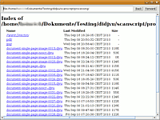
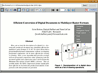
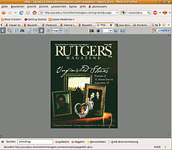

javadjvu
Dieser Artikel wurde für die folgenden Ubuntu-Versionen getestet:
Ubuntu 14.04 Trusty Tahr
Zum Verständnis dieses Artikels sind folgende Seiten hilfreich:
 javadjvu
javadjvu  ist ein in Java verfasster, und somit plattformübergreifend einsetzbarer Betrachter für das DjVu-Format. Es lassen sich auch DjVu-Dokumente auf Webseiten direkt aufrufen, und der Betrachter in einem Webbrowser als Java-Applet einsetzen. Die Entwicklung wurde von Lizardtech unterstützt, und ist innerhalb des DjVuLibre-Projektes erfolgt. Leider ist die Entwicklung schon länger "inaktiv", die letzte Version stammt aus dem Jahre 2005.
ist ein in Java verfasster, und somit plattformübergreifend einsetzbarer Betrachter für das DjVu-Format. Es lassen sich auch DjVu-Dokumente auf Webseiten direkt aufrufen, und der Betrachter in einem Webbrowser als Java-Applet einsetzen. Die Entwicklung wurde von Lizardtech unterstützt, und ist innerhalb des DjVuLibre-Projektes erfolgt. Leider ist die Entwicklung schon länger "inaktiv", die letzte Version stammt aus dem Jahre 2005.
Voraussetzungen¶
Das Programm erfordert eine Java-Laufzeitumgebung (JRE), welche mindestens der Version 1.5 (Java 5) oder neuer entsprechen sollte.
Installation¶
Das Programm selbst ist nicht über die Ubuntu-Quellen erhältlich; der Quellcode muss daher von der Projektseite  bezogen werden.
bezogen werden.
Hinweis!
Fremdsoftware kann das System gefährden.
Das Archiv wird heruntergeladen und entpackt[1], das Programm lässt sich im Downloadverzeichnis/build im Terminal[2] mit dem Befehl
java -jar javadjvu.jar
starten. Komfortabler ist es, sich einen Starter[3] für das Programm anzulegen, dazu ein kleines Skript in einem Editor[4] anlegen:
1 2 3 | #!/bin/bash cd /Pfad/zum/Verzeichnis/von/javadjvu.jar/ java -jar javadjvu.jar |
Das Skript unter einem aussagekräftigen Namen, z.B. javadjvu.sh, abspeichern und ausführbar[5] machen. Als Startbefehl im Hauptmenü dann
/Pfad/zum/javadjvu.sh
angeben.
Bedienung¶
|  |  |
| Browser | GUI mit Kontexmenü |
Nach Aufruf des Programms erscheint zunächst eine Art Browser-Fenster, in dem zum gewünschten Dokument navigiert werden kann. javadjvu kann auch als "Web-Browser" verwendet werden, entweder indem das Programm gleich mit einer Website als Argument aufgerufen, oder indem in der Eingabeleiste eine Web-Adresse eingegeben wird. Die Darstellung ist allerdings für tatsächlich im DjVu-Format vorliegenden Seiteninhalten konzipiert, andere Seiten werden ggf. nicht richtig wiedergegeben.
Nach Auswahl des gewünschten Dokumentes verändert sich das Fenster und es erscheint das Dokument sowie eine Leiste mit Bedienelementen für die Darstellung der DjVu-Datei. Nach Bedienen der Handschaltfläche lässt sich das Dokument im Hauptfenster bei gedrückter  -Taste mit der Maus bewegen. Die Lupe ermöglicht es, Ausschnitte mit der
-Taste aufzuziehen, die dann vergrößert angezeigt werden.
-Taste mit der Maus bewegen. Die Lupe ermöglicht es, Ausschnitte mit der
-Taste aufzuziehen, die dann vergrößert angezeigt werden.
Die Taste mit dem "T" dient dazu, eine vorhandene Textebene darzustellen, nicht im Dokument selbst, sondern als reine Textdarstellung. Die Funktion ist allerdings anscheinend nur direkt nach Aufruf des Dokumentes verfügbar. Die Schaltfläche mit dem Fernrohr kann verwendet werden, um in der Textebene nach bestimmten Wörtern zu suchen, die Suche kann sowohl auf der Bildebene als auch in der Textdarstellungsfunktion verwendet werden. Es öffnet sich ein Eingabefenster zur Eingabe des Suchbegriffs. Mit den daneben erscheinenden Tasten kann dann im Dokument nach Vorkommen des Begriffs gesucht werden. Wenn der Begriff nicht (oder kein weiteres Mal) gefunden werden konnte, schließt sich das Auswahlfenster dann wieder.
Die weiteren Elemente dienen zum Zoomen im Dokument selbst; dabei lässt sich die 1:1-Darstellung, Anpassung an die Fensterbreite sowie an das gesamte Browserfenster wählen; diese Funktionen sind auch über das Dropdownmenü, zwischen den "+"- und "-" Tasten zum Zoomen, verfügbar.
Wenn mehrseitige DjVu-Dokumente geladen werden, sind außerdem weitere Schaltflächen zur Navigation im Dokument verfügbar.
Kontextmenü¶
Die Bedienung kann größtenteils auch über das Kontextmenü erfolgen, das über einen  -Klick im Fenster aufgerufen werden kann. Dort lässt sich dann über den Punkt "Navigation pane" eine Seitenleiste zur Navigation über eine eventuell vorhandene "Outline" im Dokument öffnen. Für mehrseitige Dokumente lässt sich auch eine zweiseitige Darstellung wählen, ("Page-Layout-> Book"), die Option "Cover" stellt die erste Seite einzeln dar, die nachfolgenden dann zweiseitig.
-Klick im Fenster aufgerufen werden kann. Dort lässt sich dann über den Punkt "Navigation pane" eine Seitenleiste zur Navigation über eine eventuell vorhandene "Outline" im Dokument öffnen. Für mehrseitige Dokumente lässt sich auch eine zweiseitige Darstellung wählen, ("Page-Layout-> Book"), die Option "Cover" stellt die erste Seite einzeln dar, die nachfolgenden dann zweiseitig.
|  |
| Web-Applet in Firefox |
Probleme¶
Die Hilfefunktion wird in einem neuen javadjvu-Fenster geöffnet, es erscheint die Webpräsenz des Projekt, allerdings ist sie im Fenster selbst nicht bedienbar, auch die Ausgabe von "About" endet in einem weiteren javadjvu-Fenster mit einer Fehlermeldung: java.io.IOExeption: invalid DjVu File Format und nachfolgenden Meldungen dazu.
Der Betrachter reagiert auch sehr empfindlich auf den Versuch, andere Bild-Formate als .djvu-Dateinen zu öffnen - es erscheint keine Fehlermeldung, sondern das Programm bleibt ggf. schlicht und ergreifend hängen, und muss extern beendet werden. Anders ist es bei html-Dokumenten, die - manchmal zwar nicht korrekt - angezeigt werden.
Alternativen¶
DjView ist der "offizielle" Betrachter des DjVuLibre-Projekts
, der komfortablere Bedienung bietet (u.a. eine Suchfunktion für die Textebene), allerdings keine Möglichkeiten zum direkten Bearbeiten der Daten liefert.djvusmooth, ein schlichter Betrachter mit etwas weniger Bedienkomfort, es können aber Änderungen an Text und Metadaten vorgenommen werden
Evince - Der Standard-GNOME-Dokument-Betrachter ist ohne weiteres Zutun in der Lage, DjVu-Dateien darzustellen, liefert aber natürlich nicht die speziellen DjVu-Funktionen.
Okular - Auch das KDE-Pendant kann DjVu-Daten darstellen, allerdings ist dazu die Installation des Paketes okular-extra-backends nötig.
- Erstellt mit Inyoka
-
 2004 – 2017 ubuntuusers.de • Einige Rechte vorbehalten
2004 – 2017 ubuntuusers.de • Einige Rechte vorbehalten
Lizenz • Kontakt • Datenschutz • Impressum • Serverstatus -
Serverhousing gespendet von